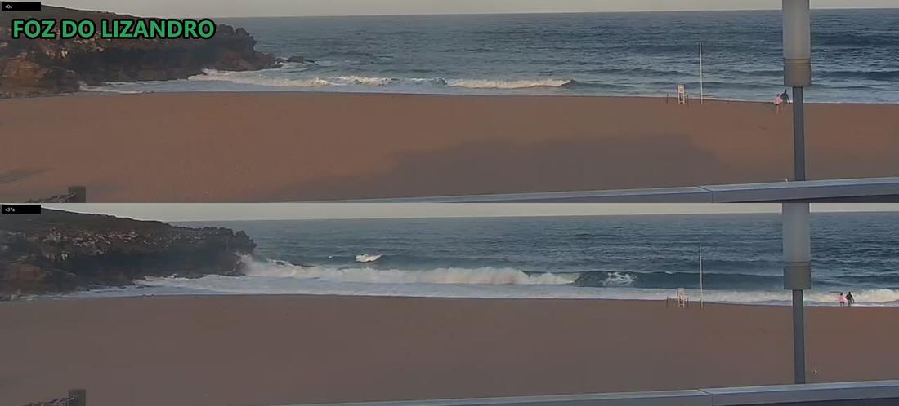
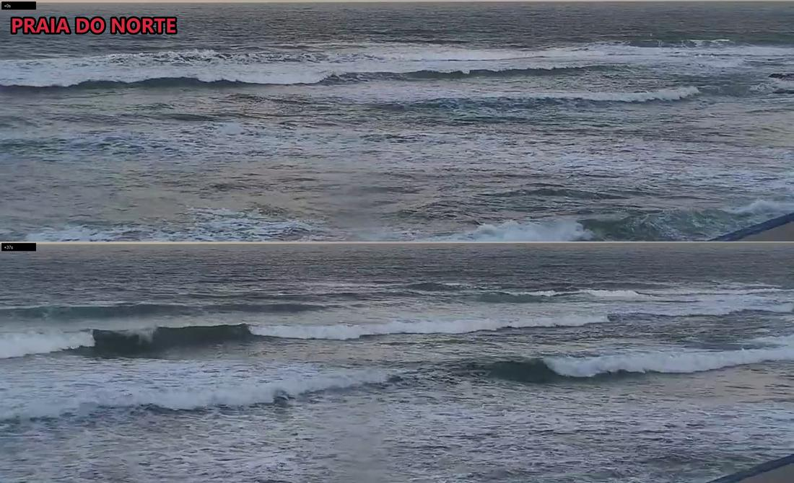
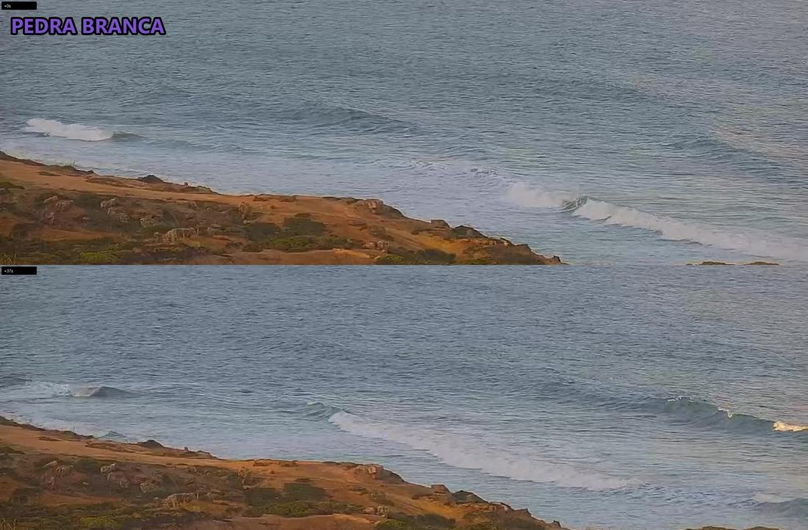
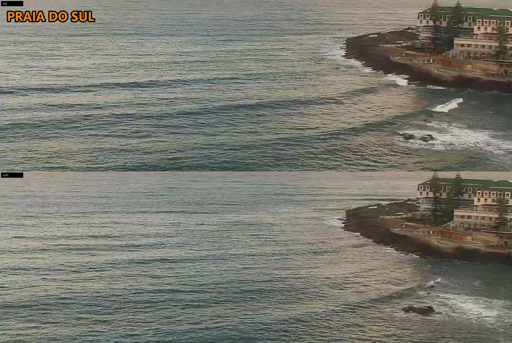

Norte
POOR0.6–1.1 m
0 surfers out
07:38 sunrise. Crossed-up short-period windswell, lines reform into whitewater with no held face. Scanned all 3 detail + 2 crowd frames: no bodies. Cam framed on water, land n/a
Last picts >>
Live cam >>
sunrise slot · run 39
Ribeira FAIR 0.6-1.1m >>
Norte POOR 0.6-1.1m >>
Sul POOR 0.6-1.1m >>
Lizandro POOR 0.6-1.1m >>
Pedra POOR 0.6-1.1m >>
2. CAM
• Ribeira — cam down (stream 404), no read. FAIR on forecast, N offshore here.
• Norte — crossed-up, reforming whitewater. 0 out.
• Sul — bay near flat. 0 out.
• Lizandro — closeout lines, one right off the rock. 0 out, 2 on the sand.
• Pedra — small clean peelers, knee-high. 0 out.
3. VERDICT
Don't go. Empty everywhere at dawn; Ribeira unseen but thigh-high at best. Least-bad is Ribeira.
NEXT 24H Ribeira: 11:00 FAIR · 15:00 FAIR · 18:00 FAIR
⭐ Ribeira Wed 07:00-10:00 FAIR 0.6-0.9m 14kt N — lightest wind of the next 24h
NEXT CHECK 11:30 — sea-breeze test, low tide 11:46.
0.6–1.1 m
0 surfers out
07:38 sunrise. Crossed-up short-period windswell, lines reform into whitewater with no held face. Scanned all 3 detail + 2 crowd frames: no bodies. Cam framed on water, land n/a
Last picts >>
Live cam >>
0.6–1.1 m
0 surfers out
07:38 sunrise. Bay near flat, swell lines roll through unbroken, only wash on the point rocks. Empty in every detail and crowd frame. Cam framed on water, land n/a
Last picts >>
Live cam >>
0.6–1.1 m
cam unreadable
07:38 sunrise. Cam stream unavailable (HLS 404), no video grabbed, so no cam read at all. Forecast-only line: FAIR, N wind offshore here. null not 0
Live cam >>
0.6–1.1 m
0 surfers out · 2 on land
07:38 sunrise. Long lines closing out along the beach, one shortish right off the north rock. Water empty in both crowd frames; 2 people at the shoreline by the flag
Last picts >>
Live cam >>
0.6–1.1 m
awaiting cam read
Last picts >>
Live cam >>



